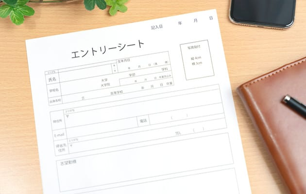

【就活における履歴書のマナー】
- エントリーシートは、「私の分身」であり “私” と “企業” との最初の接点を創り出すものである。
- 私たちが企業に提出するエントリーシートは下記の役割を持つ。
- (1)書類選考時の資料：選考の第一段階に
- (2)面接時の資料：面接官からの質問材料に
- (3)配属時の資料：志望職種記入欄がある場合には部署配属の参考に

入手方法
- ・企業のホームページからダウンロードする（企業により○月○日からダウンロード開始などの提示もあり）
- ・WEB上で入力・作成する（作成後、そのまま送信する）
- ・WEBやはがきで請求し郵送される
- 企業の説明会で配布される
- 企業に直接取りに行く
- 大学の就職課で受け取る（持ち帰って記入し、郵送する）
記入・提出上の留意点
- 提出期限を厳守（期限ぎりぎりに提出するのではなく、余裕を持って提出するようにしよう）
- 筆記用具は、黒色の万年筆かボールペンを使用する（消せるペンは使用しない）
- 丁寧に書く（字の上手・下手よりも気持ちを込めて書くことが重要）
- スペース内に納まるように記入する
- 記入欄の９割くらいは埋める（米粒のような小さな字でビッシリと書くのは避ける）
- タイトルを付ける、結論を冒頭に書く、箇条書きを活用するなどの工夫をする
- 修正液は使用しない（注意：フォーマットをコピーして下書きをしてから清書するとよい）